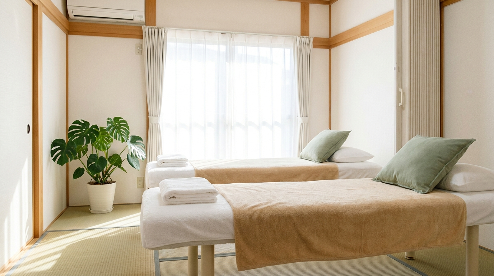
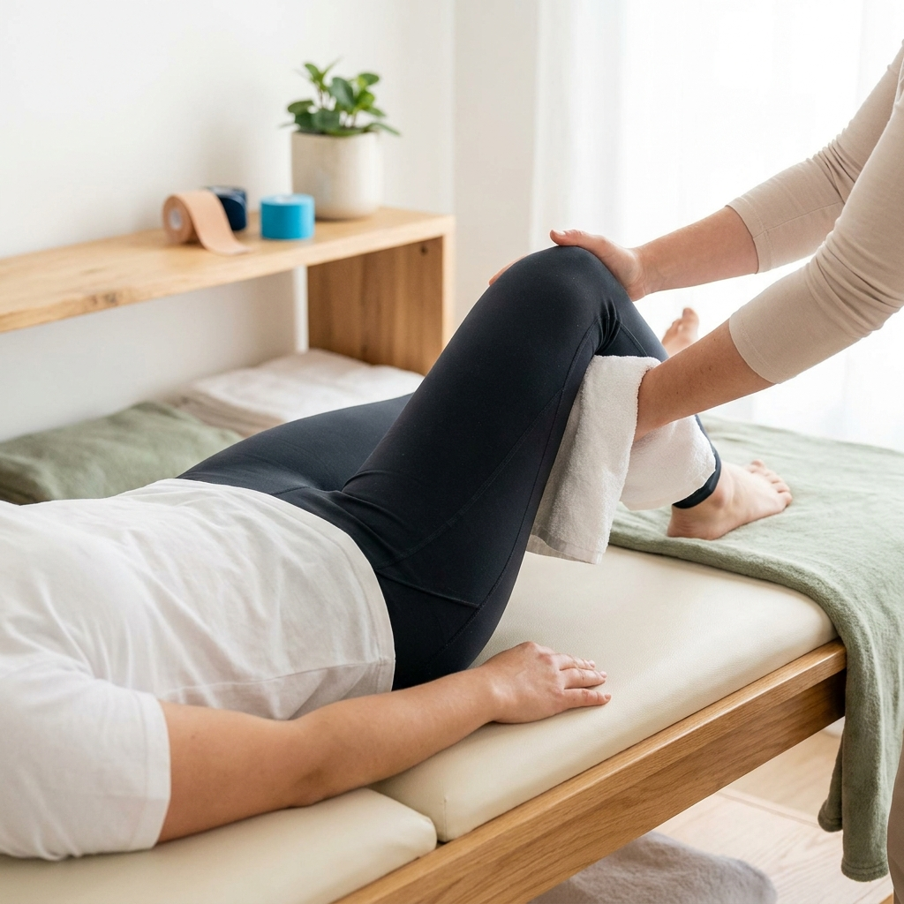
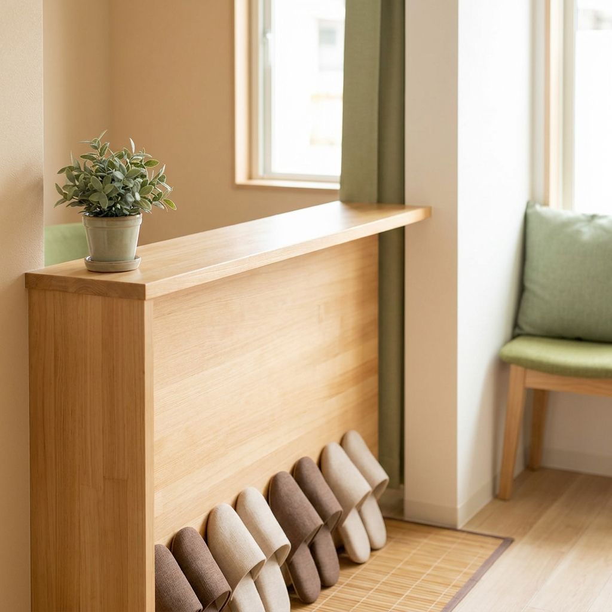

肩こり・腰痛からスポーツのケガまで。国家資格者が一人ひとりの体に合わせて、丁寧に施術します。※これは制作イメージをご覧いただくための架空の院のデモページです。
そのお悩み、そらまち整骨院にご相談ください
痛む場所だけでなく、姿勢や生活習慣までお聞きして原因を探ります。初回はお時間を多めにいただき、施術方針をご説明してから始めます。

手技を中心に、症状と体の状態に合わせて施術を組み立てます。「強く揉むだけ」ではない、体の使い方まで含めたケアを行います。

予約優先制で待ち時間を短く。お仕事帰りにも通いやすい診療時間で、無理なく続けられる通院計画をご提案します。
| 院名 | そらまち整骨院 |
|---|---|
| 所在地 | 東京都◯◯区◯◯ 1-2-3(架空の住所です) |
| 営業時間 | 平日 9:00〜19:30 / 土曜 9:00〜17:00 |
| 定休日 | 日曜・祝日 |
| ご予約 | お電話・LINEでの予約優先 |